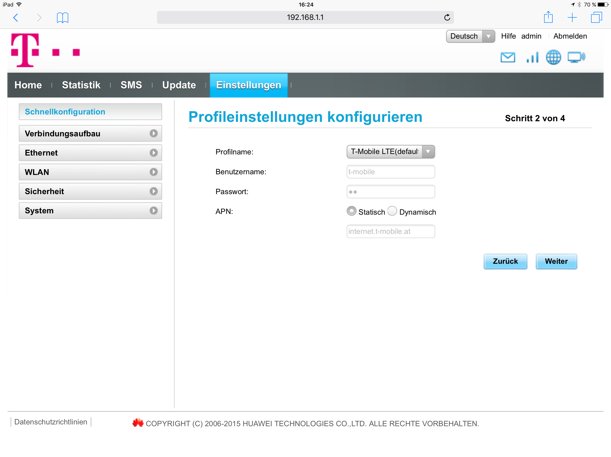

Also, ich möchte gerne im WLAN über die HomeNet box Huawei mehrere Kameras betreiben und auch darauf von Außen zugreifen.
Ich bin aber leider nur ein interessierter Laie!
Gibt´s da Hilfe?
Thx
Ingo
Hallo Ingo,
ein herzliches Hallo und Willkommen in unserer Community.
")
Hast du schon den APN auf business.gprsinternet umgestellt? Damit sollte es dann grundsätzlich möglich sein.
Vielleicht gibst du uns und unseren Usern auch noch die Info, welche Kameras du verbinden möchtest. So fällt es bestimmt leichter zu helfen.
") @Mario M. hat da immer hilfreiche Tipps und ist einer unserer ExpertInnen.
@Mario M. hat da immer hilfreiche Tipps und ist einer unserer ExpertInnen.

LG Kathi
Die Frage ist ob die Kameras eine fixe IP brauchen oder ob eine öffentliche reicht.
Welche Kameras willst du anhängen?
Schon mal Danke vorab!?
Es sollten Kameras von Instar sein (IN 5902 HD) 6 Stück.
LG
Ingo
Den APN umzustellen ist mir leider auch nicht gelungen, da ich nichts eintippen kann.

Wegen dem APN schau mal bei Verbindungsaufbau - Profilverwaltung.
In der Schnellkonfig. kannst du kein neues Profil anlegen.
Die Kameras werden über WLAN eingebunden, soweit ich es jetzt gesehen habe. Demnach ist der APN für WLAN nicht wichtig. Soweit ich es gesehen habe, kannst du lokal im Netzwerk und über die Cloud die Kameras anhängen.
Hast du lokal schon versucht?
http://www.instar.de/media/wysiwyg/Products/Cameras/Downloads/Manuals/flyer_5905HD.pdf
Denke mal die 5905 ist hier nicht so unterschiedlich.
Hallo NED,
thx
ich werde mein Bestes geben
nur ein Uni-Abschluß alleine ist glaub ich nicht mehr genug!
vor 19 Stunden schrieb Skwalattack:
Hallo NED,
thx
ich werde mein Bestes geben
nur ein Uni-Abschluß alleine ist glaub ich nicht mehr genug!
Ach du schaffst das schon -
@NED
hats schon gut beschrieben
Im Zweifelsfall einfach nochmal nachfragen - dafür sind wir ja da
Den APN hab ich geschafft.
Die Kameras sind jetzt auch bestellt, weil ich mir eben nicht sicher war, ob ich das hinkriegen werde.
Aber jetzt mit eurem tollen Support bin ich ganz zuversichtlich.
Ich darf mich melden - Vielen Dank
Lg
Ingo
vor 22 Stunden schrieb Skwalattack:
nur ein Uni-Abschluß alleine ist glaub ich nicht mehr genug!

.... denke ich mir auch schon bei vielen Situationen
@NED
Danke für die Unterstützung auch von meiner Seite
{kind=link}